ID // 01
DIR / LEAD
Mark Fischbach
Writer, Director & Lead Role
Making his feature directorial debut, Fischbach writes, directs, and stars as the doomed convict sealed inside the SM-13 submersible.
A Feature Film Event
NO WINDOWS. NO ESCAPE. AN OCEAN OF BLOOD.
Written & Directed by Mark Fischbach • Based on the Cult Horror Game by David Szymanski
In a dying universe stripped of stars, one convict is welded inside a corroded midget submarine and lowered into an uncharted sea of human blood—blind to whatever hunts in the dark.
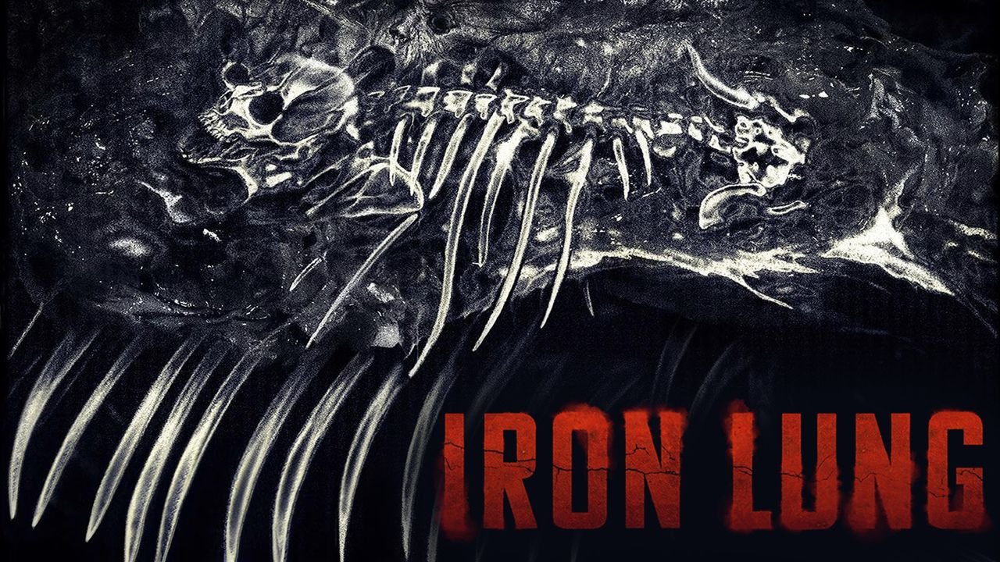
ARCHIVE LOG // 001 — SYNOPSIS
Decades ago, without warning or explanation, every star and habitable planet in the known universe vanished.
Known only as The Quiet Rapture, the cataclysm left behind an endless void of ash and drifting wreckage. The remnants of humanity now cling to survival aboard decaying, oxygen-starved space stations—scavenging dying moons for the dwindling resources required to keep the lights from going out forever.
On the barren, desolate moon designated AT-5, explorers make an impossible discovery: a vast, subterranean ocean composed entirely of human blood. Beneath its crimson surface lie anomalous structures and vital minerals that could save humanity from extinction.
To reach the trench, a condemned convict is welded inside the SM-13—a rusted, leaking midget submarine nicknamed the “Iron Lung.” With every viewport sealed shut against the crushing pressure, he must navigate blindly using proximity sensors and a single external camera... unaware that something massive is moving beneath the blood.
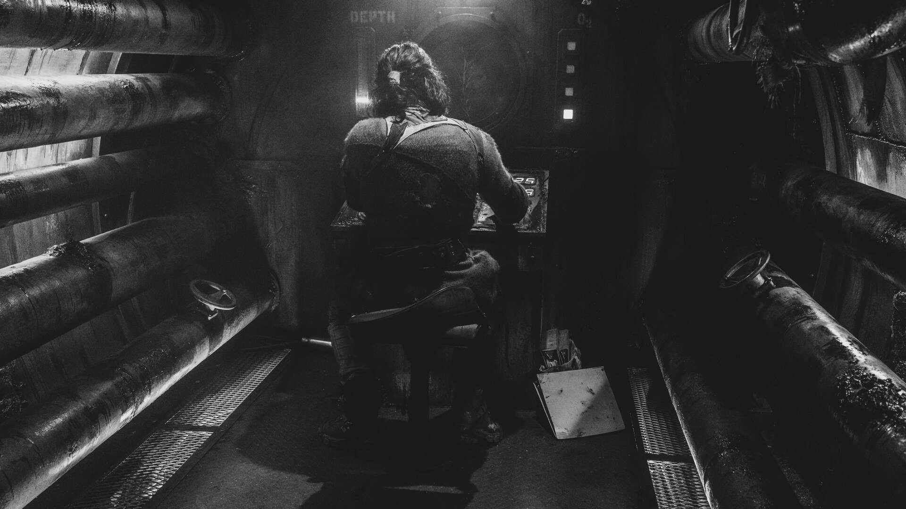
CLASS: DEEP-TRENCH RECON
STATUS: WELDED SHUT
Hull Status
Corroded // Heavily Oxidized Iron
Viewport Configuration
None — External Camera Only
Operating Environment
Sub-surface Blood Ocean on AT-5
Survival Probability
Negligible (< 0.01%)
* WARNING: Entry hatch is permanently arc-welded prior to submersion. Vessel lacks emergency ballast release.
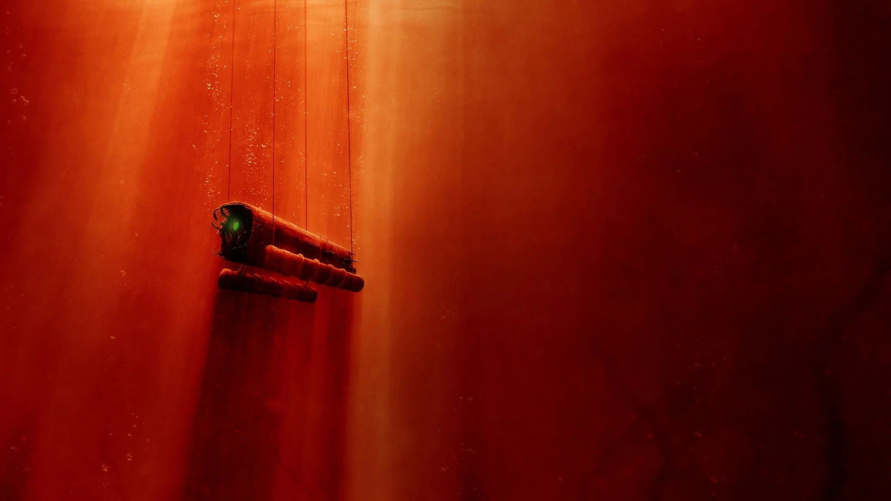
SOURCE MATERIAL // 2022 CULT CLASSIC
Created in 2022 by solo indie developer David Szymanski, Iron Lung redefined psychological dread through pure minimalism. Trapping players inside a single cramped room with no direct visibility, the game transformed simple X/Y coordinate dials, metallic groans, and slow-developing grainy photographs into a viral terror sensation—inspiring Mark Fischbach to bring its suffocating atmosphere to theaters.
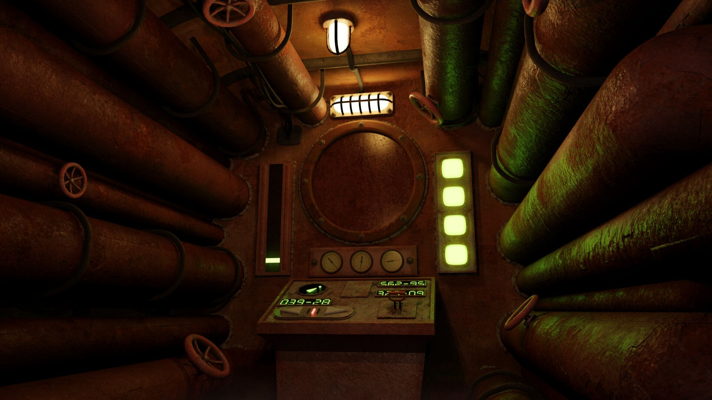
Blind Navigation: Players steer exclusively by numbers and sonar ticks, never seeing the ocean directly.
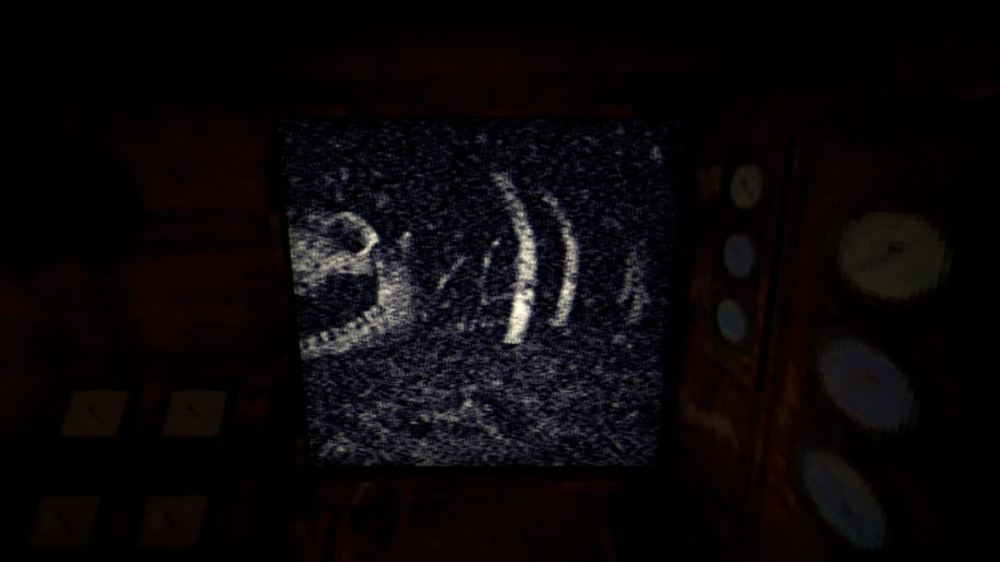
The Camera Mechanic: Every low-resolution snapshot reveals a terrifying new clue—or confirms you are not alone.
PERSONNEL MANIFEST // CREDITS
Writer, Director & Lead Role
Making his feature directorial debut, Fischbach writes, directs, and stars as the doomed convict sealed inside the SM-13 submersible.
Principal Cast
Known for The Plot Against America and Proof, Kaplan joins the expedition crew in a pivotal dramatic role.
Principal Cast
Acclaimed performer celebrated for The Last of Us and BioShock Infinite lends his commanding presence to the film.
Original Game Creator
Creator of DUSK and the original 2022 Iron Lung video game, collaborating closely to preserve the lore and dread of AT-5.
VISUAL EVIDENCE // PRESS KIT STILLS
6 RECOVERED FRAMES // AT-5 ARCHIVE
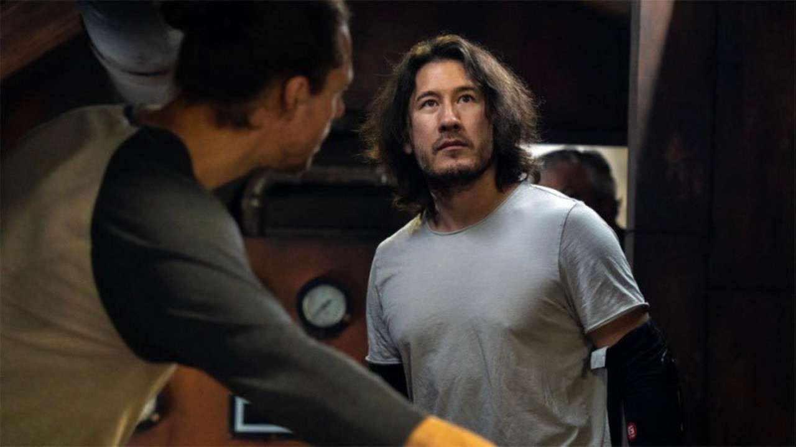
STILL 01 // 00:14:22 SURFACE DOCKThere is no turning back once the iron seal is fused shut from the outside.
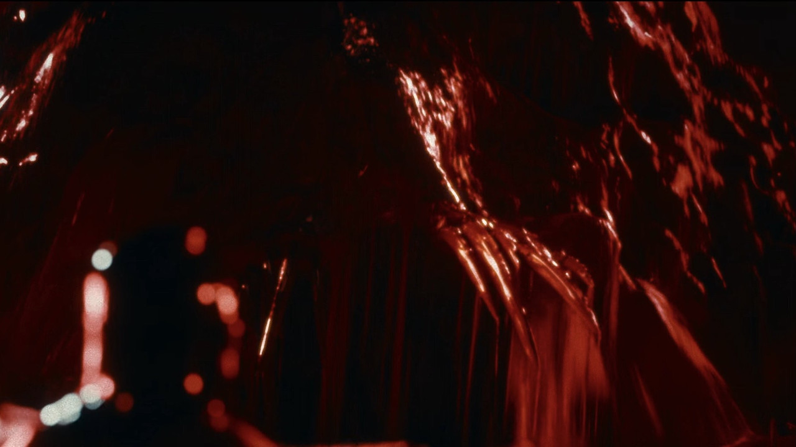
STILL 02 // 00:31:09 DEPTH: -50MDescending beneath an opaque ocean of blood where sunlight has never existed.
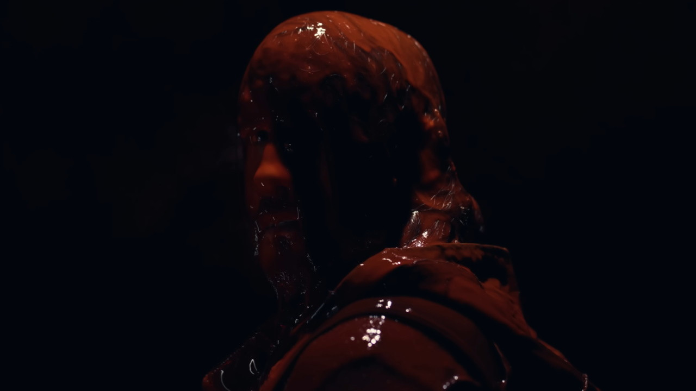
STILL 03 // 00:48:55 PROXIMITY ALERTThe proximity alarm triggers—signaling an unidentified mass circling the hull.
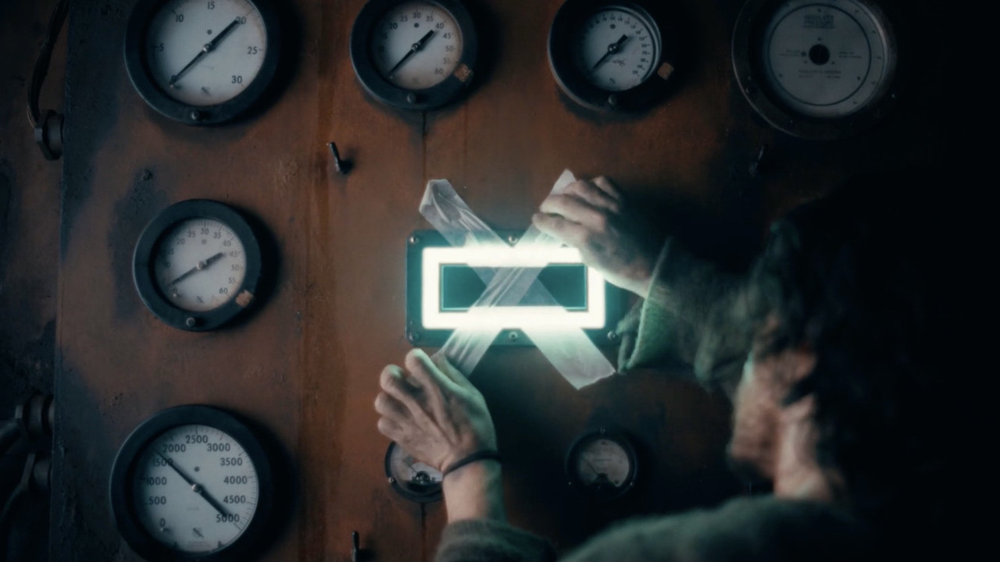
STILL 04 // 01:05:17 HULL BREACHAs pressure mounts, corroded iron rivets begin to buckle under the weight of the ocean.
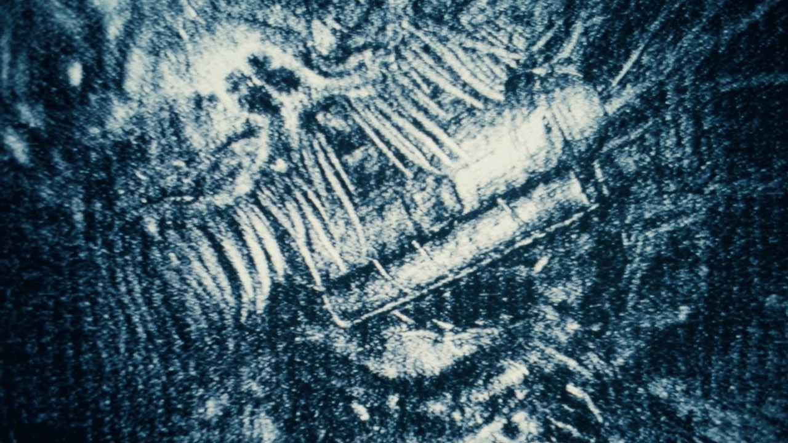
STILL 05 // 01:22:40 SECTOR X-84An impossible ruin emerges on the camera monitor deep within the abyssal canyon.
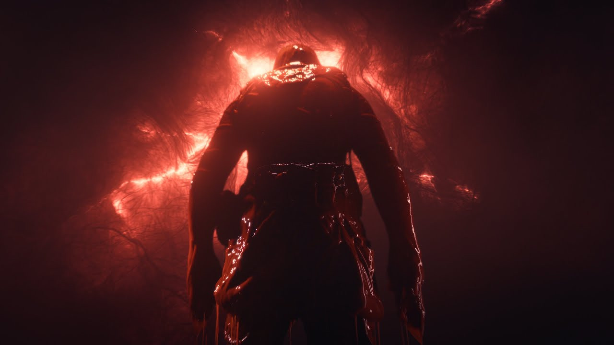
STILL 06 // 01:39:03 SIGNAL LOSTIn the final transmission from AT-5, survival gives way to pure cosmic terror.